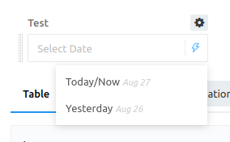
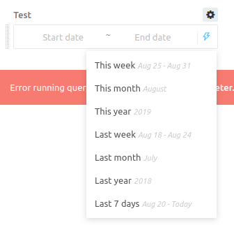

i want to view data since 2 days ago or 2 months ago is redash support this ?
This site is in read only mode. Please continue to browse, but replying, likes,
and other actions are disabled for now.
Probably, yes. Redash sends your queries to the underlying database. So assuming your DB has data going back that far then you should be able to query it.
{kind=link}
Yes, this feature is supported in Redash v8 (beta already available as docker image, or you can check out master branch on GitHub):


2 Likes
Note that this version has issues with MySQL data sources (under some configurations) and Celery healthchecks. A new beta is going to be released next week.
To grant users administrator privileges in Redash, add them to the admin group from the settings screen. You must already be an Admin to do this. The first user created in a Redash instance is automatically included in the admin group. You can eliminate users’ administrator privileges by removing them from the admin group.
{kind=link}
1 Like
i created new user and then added him in admin group as you said
but how i know his password to manage him make login with his mail @jesse
You won’t see other users’ passwords in Redash. They set their own password the first time they log in. You can send a password reset email from the interface, but that’s all.
when i used query result in this version it returns empty data
so what cause this ? @arikfr @jesse
the query i used to return data from it using query parameter is this that make data get empty ??